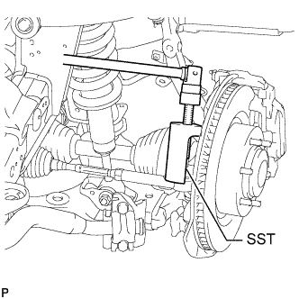
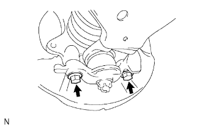
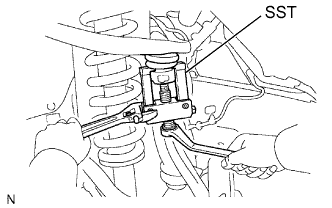

ПОВОРОТНЫЙ КУЛАК > СНЯТИЕ |
| 1. ОТСОЕДИНИТЕ ПРОВОД ОТ ОТРИЦАТЕЛЬНОГО ВЫВОДА АККУМУЛЯТОРНОЙ БАТАРЕИ |
| 2. СНИМИТЕ ЛЕВЫЙ ПЕРЕДНИЙ ДАТЧИК ЧАСТОТЫ ВРАЩЕНИЯ |
Выверните болт и снимите датчик частоты вращения с кулака.
| 3. СНИМИТЕ СТУПИЦУ ЛЕВОГО ПЕРЕДНЕГО КОЛЕСА В СБОРЕ |
Снимите ступицу переднего колеса (Нажмите здесь).
| 4. ОТСОЕДИНИТЕ НАКОНЕЧНИК ЛЕВОЙ РУЛЕВОЙ ТЯГИ В СБОРЕ |
|  |
Отсоедините наконечник рулевой тяги в сборе с помощью SST.
| 5. ОТСОЕДИНИТЕ КРЕПЛЕНИЕ ЛЕВОГО ПЕРЕДНЕГО НИЖНЕГО ШАРОВОГО ШАРНИРА |
|  |
Выверните 2 болта и отсоедините крепление переднего нижнего шарового шарнира от полуоси.
| 6. СНИМИТЕ ЛЕВЫЙ ПОВОРОТНЫЙ КУЛАК |
Поддомкратьте левый нижний рычаг передней подвески.
Снимите фиксатор и отверните гайку.
|  |
С помощью SST отсоедините верхний шаровой шарнир от поворотного кулака.
Снимите поворотный кулак.